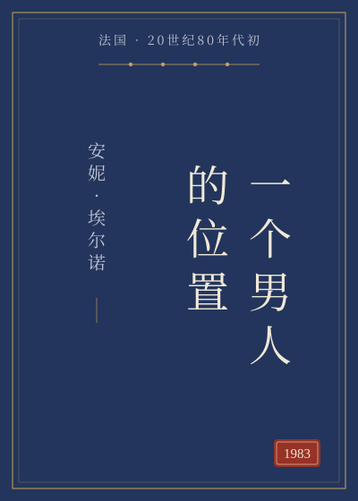
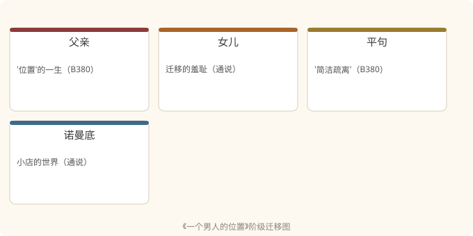

一个男人的位置
一、基本信息
| 作者 | 安妮·埃尔诺 |
|---|---|
| 成书/出版 | 1983年（Britannica B380：La Place (1983; A Man's Place)——勒诺多奖） Annie Ernaux — Encyclopaedia Britannica（百科全书） |
| 国别/地区 | 法国 |
| 时代 | 近代 · 20世纪80年代初 |
| 体裁 | 自传性叙事 |
| 语言 | 法语 |

《一个男人的位置》阶级迁移图（主题·结构图）
二、创作背景
Britannica（B380）：La Place——父亲——勒诺多奖（Prix Renaudot）。
Britannica（B380）：埃尔诺——'spare, detached prose'——'revealing the artifice of her own genre'。
题材（通说待核）：父亲的'位置'——从农民到小店主与'阶层迁移'的羞耻。
三、内容脉络
（通说待核）父亲的死与'平的句子'：不给他的生padding。
（通说待核）'阶级迁移'：女儿的教育与父亲的沉默。
四、主要人物表
| 人物 | 身份 | 说明 |
|---|---|---|
| 父亲 | 小店主 | （B380：her father's working-class life） |
| 女儿（'我'） | 叙述者 | （B380 语境） |
五、主题与艺术特点
- '父亲的位置'（书名语境——通说待核）。
- 阶级迁移的羞耻（通说待核）。
- '简洁疏离'的文体（B380：spare, detached prose）。
六、影响与评论
- Britannica：勒诺多奖（B380）。
Annie Ernaux — Encyclopaedia Britannica（百科全书） - Britannica：2022诺奖（B380 交叉）。
Annie Ernaux — Encyclopaedia Britannica（百科全书）
七、阅读建议
难点
- '平的句子'的文体。
- 诺曼底小商人社会。
- 《一个男人的位置》中译本（人民文学/上海人民出版社等——通说待核）。
- 法文原版。
埃尔诺成名作；先于《岁月》。
八、待核实
- 父亲职业细节核对（通说）。
- 1983年出版（Gallimard说）待核。
- '勒诺多奖'（B380已载）核对。